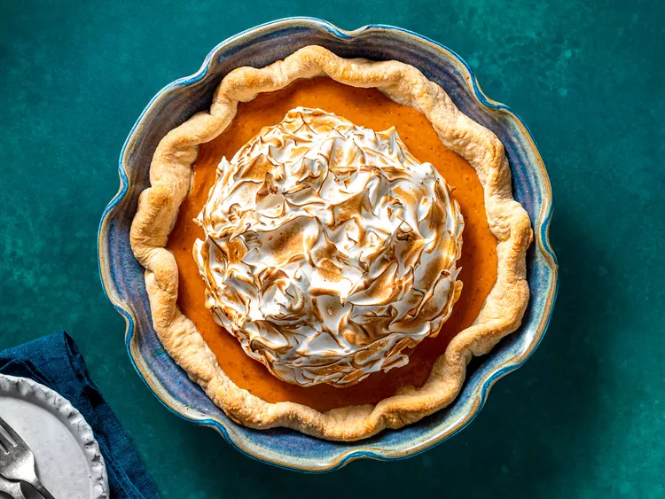

Pumkin pie with Vanilla Meringue

Description
Michelle Lopez uses "next-level whipped cream" to make her pumpkin pie a showstopper.
Ingredients for the Pie
- 1 (9 inch) unbaked pie crust
- 1 (15 ounce) can pumpkin puree
- 1 (14 ounce) can sweetened condensed milk
- 2 large eggs
- 1 teaspoon pumpkin pie spice
Vanilla Meringue
- 1 cup granulated sugar
- 5 large egg whites
- ¼ teaspoon cream of tartar
- 1 pinch salt
- 2 teaspoons pure vanilla extract
Steps
- Follow the directions for making Allrecipes' Simple Pumpkin Pie, then make the meringue.
- Place the sugar, egg whites, cream of tartar, and salt in the top pan of a double boiler or in a heatproof bowl set over a medium, heavy-bottomed saucepan filled with a few inches of simmering water (be sure the bottom of the bowl does not touch the water).
- Cook over medium heat, using a heatproof rubber spatula to stir the mixture and scrape the sides of the bowl occasionally, until the sugar is completely melted and the candy thermometer inserted in the center of the mixture reads 160 degrees F (70 degrees C).
- Immediately pour the mixture into the bowl of a stand mixer fitted with the whisk attachment. Whisk on low for 1 minute, then increase the speed to medium-high and whisk for 10 minutes, or until stiff, glossy peaks form and the sides of the bowl should feel cool to touch. Add the vanilla and mix on medium-low speed until combined.
- Use immediately by scooping the meringue over the pumpkin pie. Use a chef's torch (see foot note) to toast the meringue and serve immediately.
Cook's note
If you don't have a chef's torch, you can also broil the adorned pie in the oven for around 30 seconds to torch the meringue. Just watch it like a hawk or you'll risk overdoing it!
Main page